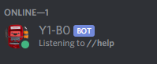
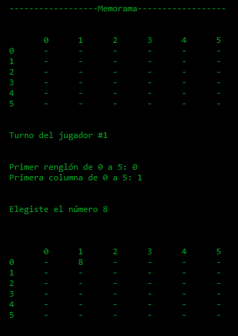

PROJECTS

Discord Bot
Coded a bot used for Discord servers from scratch based only on the
discord.py
documentation. In order to invite this bot to a server click
here,
and its source code can be found
here.
All of its functionalities are listed on when asked for help in a server. However, here are a few things it is able
to do; save notes from users of the server, play hangman, join a voice channel and play a selected song/s, among
many others.
Memorandum
One of the first projects I ever worked on while on my Computer Science career,
which can be found in
this
repository. While working on this project, I learnt how to implement matrixes and how to search for specific positions
in said matrixes. While this may not be the most complex code or most visually appealing of my potential work,
it showed me that programming truly was my passion, as well as the value of teamwork when it comes to writing extensive code.

Personal Website
This refers to
this website
, and while not the first ever website I've ever worked on, it is the one
I've spent the most amount of time trying to polish and tune to my personal liking. Since my school
doesn't mainly teach HTML and CSS, aside from classes separated from the main course, I've had to
teach myself these languages. The main thing I've noticed is that I'm more than capable to teach
myself.